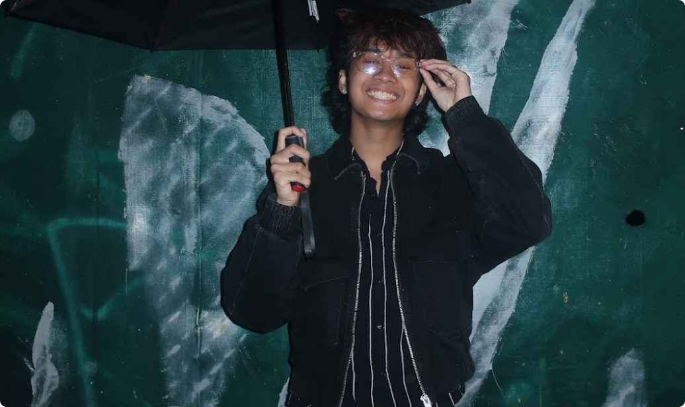

A ZEALOUS SOCIALITE.
A HARDCORE DESIGNER.
About Me
I’m a UX/UI designer concentrating on web and interaction design.
As a training front-end developer + designer, my focus is on bringing fourth
innovative digital experiences that are both beautiful and deeply functional.
When I’m not designing, you can find me at the gym, modeling for a clothing
company, or attending a concert I spent to much money on!
I’ll be modeling for a clothing company, or attending a concert I spent
to much money on!
Currently studying Interactive Arts & Technology at SFU, I specialize in designing
and developing for web and mobile, interaction design, and exploring how AI can enhance
digital experiences.

Experience
Chit Chats
Shipment Processor
Customer Satisfaction Representative
2021 - Current
Green Basil Thai Restaurant
Co-Design Lead
2025
Industry Media Group
UX/UI Designer
2024 - Current
